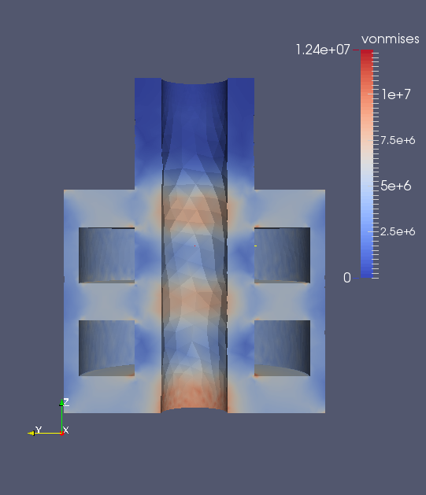

Design
The projects below include current and previous products that I've designed. I'll walk through the design process and analysis procedures for each.
Differential Mounts
This part was created for the WSU Formula SAE team.
The part was designed to:
1. Hold axles in correct alignment relative to wheel
2. Mate to differential
3. Mate to tripod joints
4. Withstand drivetrain loading
The part was designed using Solidworks to create a parametric 3D model. The max loads on the part were determined using hand calcuations. Iterations of the model were run in Solidworks Simulation until the part was optimized with the least amount of material needed to resist the loading.
The final geometry:

Results:
Part worked successfully through through testing and competition.
Bar End Weight Fix
This part was created to replace a lost part on a V Strom motorcycle.
The original part was positioned inside of the handlebars and accepted an M6 screw that held the bar end weight to the handlebars. I decided to use a press fit on a 3D printed part for the ease of manufacturing and assembly. Calculations in Python were used to confirm that a 3D printed ABS part would be a reasonable solution based on stress due to press fit, pull out force of press fit and strength of threads.
A 3D model of the part was created in FreeCAD. FEA of a simplified version of the model was analysed in ELMER. The part was then optimized by removing material based on the initial analysis and ran again.
Analysis results shown in Paraview:

The part will be 3D printed in ABS upon receipt of my 3D printer and installed.